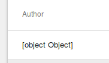
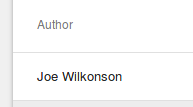
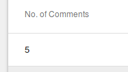

Rendering Related Model Data¶
One of the key things about a well structured Data Model is how the models are related.
In the classic Post, User, Comments model, a User can be
either an author of a Post, or of a Comment. If you need to update a User's
name, ideally you don't want to have to go through all the Posts and Comments
updating the name, instead you should update just the User object, and
have a "Link" between Posts and Comments, and the User.
In RevJS, this is achieved with RelatedModel fields (see
Working with Related Models).
Once you have these relationships defined, you'll probably want to be able to display this related information to the user. The following sections describe a couple of ways this can be done.
Displaying RelatedModel fields¶
In the example above, we mentioned that a User can be an Author of a Post.
In our Post model, this is modelled as shown below:
export class Post {
@RelatedModel({ label: 'Author', model: 'User' })
user: User;
...
}
If we just include the user field in our ListView fields, it will
appear as shown in the screenshot below:

You may notice that "[object Object]" is the standard result of calling
toString() on a JavaScript object. So, to have the Author name displayed,
we just need to override the toString() method on the User model:
export class User {
...
toString() {
return this.first_name + ' ' + this.last_name;
}
}
This will result in the user's name being shown, which is what we want:

Using JavaScript Getters¶
There may be situations where just defining a toString() method on a model is not flexible enough, for example if you want a User's details to be displayed differently in different situations, or if the value you want to show is based on data from multiple models.
In these situations you can a JavaScript Getter function.
In the example below, we define a Getter on our Post object which returns the number of Comments:
class Post {
...
@IntegerField({ label: 'No. of Comments' })
get number_of_comments() {
return (this.comments && this.comments.length) || 0;
}
}
(Note: this requires retrieval of all the comments, so don't do this in production!)
Once the getter is defined as a field, you can then add number_of_comments to
the fields list of your ListView, and it will be displayed as shown below:

Reading Related Models in ListViews¶
By default, when a <ListView /> fetches data, it will fetch fields from the specified model only.
If you wish to fetch related model data, you will need to specify the related
property.
In the example below, we retrieve Posts along with their Author and Comments:
<ModelProvider modelManager={modelManager} >
<ListView
title="Current Posts"
model="Post"
fields={[
'post_date',
'title',
'description',
'user',
'number_of_comments',
]}
related={[
'user',
'comments'
]}
where={{
post_date: { _gt: '2017-01-01' }
}}
orderBy={['post_date desc']}
limit={5}
/>
</ModelProvider>
(Complete working example here).